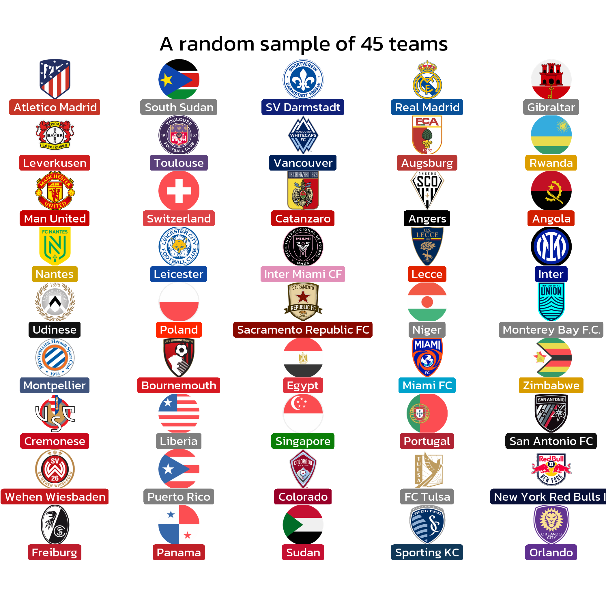
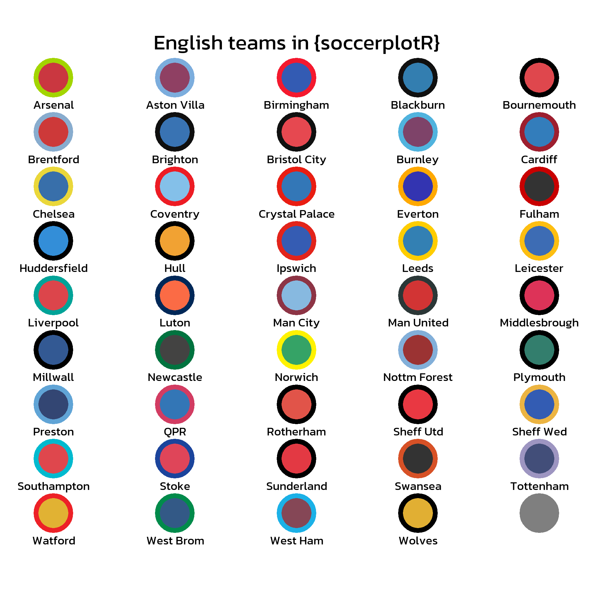

The goal of soccerplotR is to provide functions and geoms that help visualization of professional soccer analysis. It provides a ggplot2 geom that does the heavy lifting of plotting soccer team logos in high quality, with correct aspect ratio and possible transparency. All of this is done by the powerful ggpath package.
Installation
To get a bug fix or to use a feature from the development version, you can install the development version of soccerplotR from GitHub with:
if (!require("pak")) install.packages("pak")
pak::pak("tonyelhabr/soccerplotR")Examples
library(soccerplotR)
library(ggplot2)
FONT <- "Kanit"
sysfonts::font_add_google(FONT)
showtext::showtext_auto()
showtext::showtext_opts(dpi = 300)
team_names <- unlist(unname(soccerplotR::all_valid_team_names()))
set.seed(42)
sampled_team_names <- sample(team_names, size = 45)
df <- data.frame(
a = rep(1:5, 9),
b = sort(rep(0:8, 5), decreasing = TRUE),
team_name = sampled_team_names
)
ggplot(df) +
aes(
x = a,
y = b
) +
geom_soccer_logos(
aes(
team_name = team_name
),
width = 0.075
) +
geom_label(
aes(
label = team_name,
fill = team_name
),
color = "white",
family = FONT,
size = 10 / .pt,
nudge_y = -0.5
) +
scale_fill_soccer(type = "primary") +
theme_void() +
theme(
plot.margin = margin(25, 25, 25, 25, "pt")
) +
coord_cartesian(clip = "off") +
labs(
title = "A random sample of 45 teams"
) +
theme(
plot.title.position = "plot",
plot.title = element_text(family = FONT, size = 18, hjust = 0.5)
)
team_names <- soccerplotR::valid_team_names("ENG")
df <- data.frame(
team_name = team_names,
value = 1:length(team_names)
)
df$team_name <- factor(df$team_name, levels = df$team_name[order(df$value)])
ggplot(df, aes(y = team_name, x = value)) +
geom_col(aes(color = team_name, fill = team_name), width = 0.8) +
scale_color_soccer(type = "secondary") +
scale_fill_soccer(alpha = 0.8) +
theme_minimal() +
theme(
plot.title.position = "plot",
plot.title = element_text(family = FONT, size = 18),
axis.text = element_text(family = FONT),
panel.grid.major.y = element_blank()
) +
labs(
x = NULL,
y = NULL,
title = "English teams in {soccerplotR}"
)